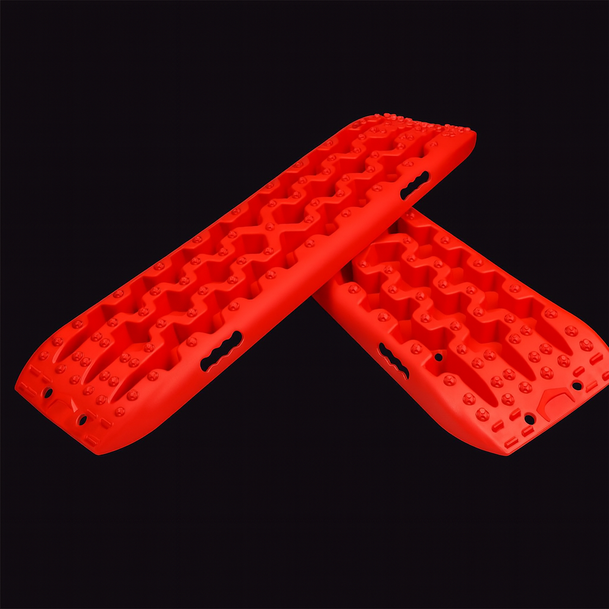
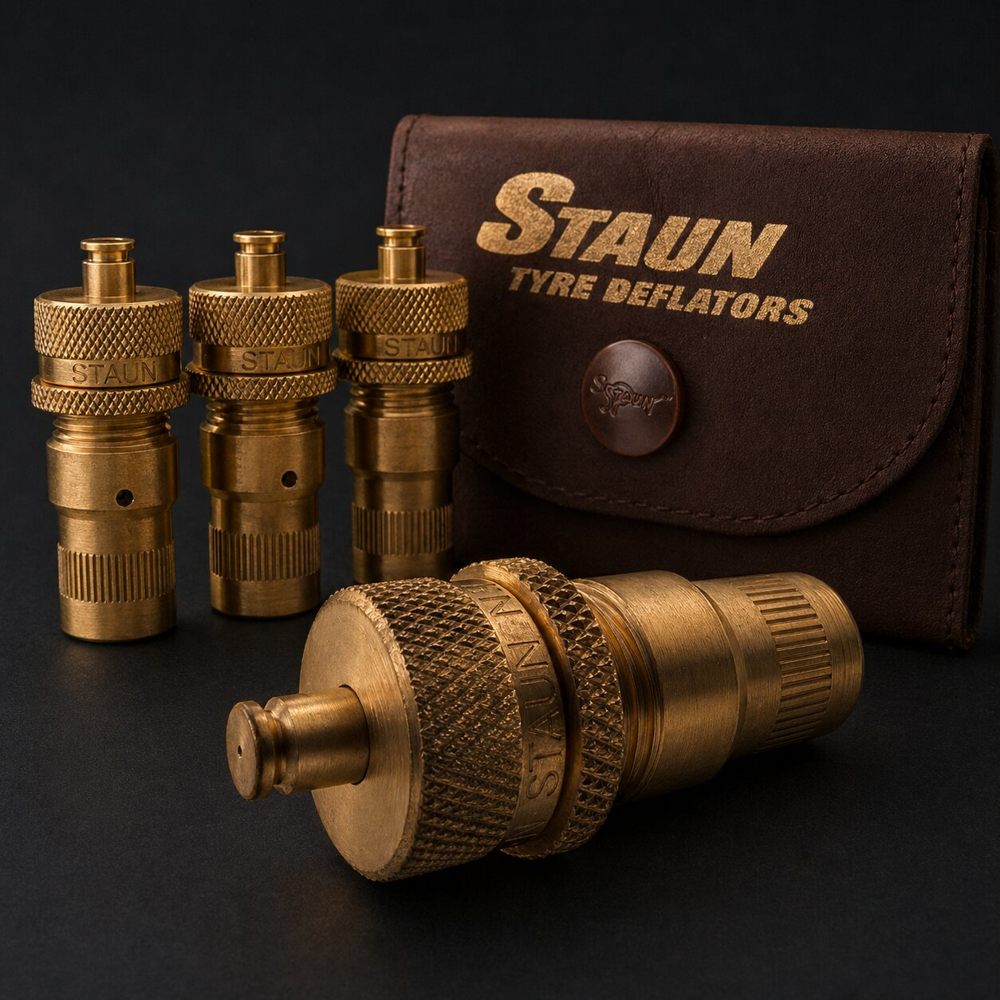
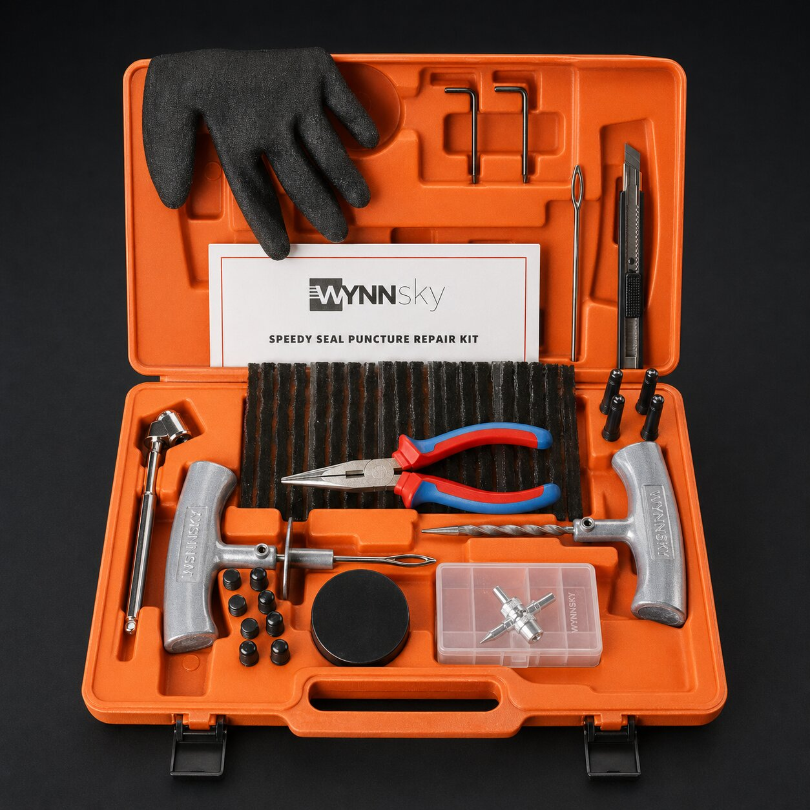

Viair 88P Portable Air Compressor
The compressor that makes airing down a real option because the pavement drive home is covered.
 By Chris Follin
By Chris FollinTRUCK BACKUP
Dirt roads make tire pressure, traction, battery backup, and small repairs matter more than they do in town. This is the kit I would rather have before the road gets soft, rocky, dark, or inconvenient.

Most camp-road problems are not heroic recoveries. They are low tires, bad traction, one dumb puncture, a weak battery, or being far enough out that a small issue becomes a long delay. This lane is about keeping those problems boring.
Stop wheelspin and assess from a safe position. Do not crawl beneath an unstable or unsupported vehicle, release a loaded trailer, or remove tongue load as a recovery shortcut.
A useful kit also includes communication and a plan for waiting safely. Having more equipment does not make an unsafe route a sensible route.
Secure boards, tools and containers for transport as cargo. Use restraints with readable working-load information, compatible rated anchors and undamaged webbing/hardware. Follow the strap maker’s threading, tensioning and release instructions.
Block or restrain movement in the directions the load can actually travel, protect webbing at edges, secure loose tails and recheck the load after it settles. Select the restraint arrangement for the actual load and anchors; a fixed strap count is not enough.
NHTSA’s load-security check asks what happens under braking, bumps and movement at the back, sides and top. If you cannot establish the restraint and anchor capacities for the actual load, get qualified help before transport.
The compressor that makes airing down a real option because the pavement drive home is covered.

Preset deflators that make pressure changes fast enough that you will actually use them before rough roads.

A compact plug kit; sealing a leak does not replace internal inspection or establish that driving is safe.
Traction boards for the sand, mud, snow, or soft shoulder problem that needs surface area more than throttle.

A compact jump starter for dead-battery mistakes, especially after lights, doors, chargers, or fridge time.

The communication backup for remote routes where a phone stops being a rescue plan.

The small repair tool for hose clamps, loose hardware, splinters, packaging, and little camp-road annoyances.
Start with the problems that are common and easy to solve if you have the tool before you need it: tire pressure, punctures, traction, and battery backup.
| Problem | Primary Gear | Why It Matters | Limit | Read Beforehand |
|---|---|---|---|---|
| Rough or sandy road | Staun deflators + Viair 88P | Lower pressure can improve ride and traction; the compressor makes the choice reversible. | Do not air down without a way to air back up accurately. | Air down tires |
| Tread puncture | WYNNsky tire plug kit | Limited kit capability; an external plug does not establish that a tire is safe to drive. | Outside string plugs are temporary; sidewall, shoulder, major damage, and run-flat damage are stop conditions. | Tire repair limits |
| Soft shoulder or stuck tire | X-BULL recovery boards | Add surface area and bite when throttle only digs deeper. | They are not a substitute for judgment, a shovel, safe spotting, or proper recovery points. | Use traction boards |
| Dead battery | NOCO Boost Plus GB40 | Handles the common camp mistake of leaving a battery too low to start. | Does not fix a failed battery, bad alternator, or unsafe battery condition. | Jump start a car |
| No cell service | Garmin inReach Mini 2 | Gives you messaging and SOS capability when the phone has no network. | Requires an active plan and clear-sky use habits; test it before the trip. | inReach Mini 2 notes |
The point is not to carry every rescue fantasy. It is to carry the tools that match the roads you actually take.
BASELINE KIT
Choose: you drive dirt roads often enough that pressure and punctures are realistic. Skip: you only visit paved campgrounds and never leave maintained roads.
SOFT ROAD KIT
Choose: sand, mud, snow, ruts, or soft shoulders are part of the route. Skip: you would use boards as permission to drive farther into a bad decision.
BATTERY BACKUP
Choose: you run lights, fridge, chargers, doors, or accessory loads at camp. Skip: you have not charged and tested the jump pack recently.
REMOTE ROUTES
Choose: help is far away, cell service is unreliable, or you travel solo. Skip: you have not activated, tested, and taught the group how to use the messenger.